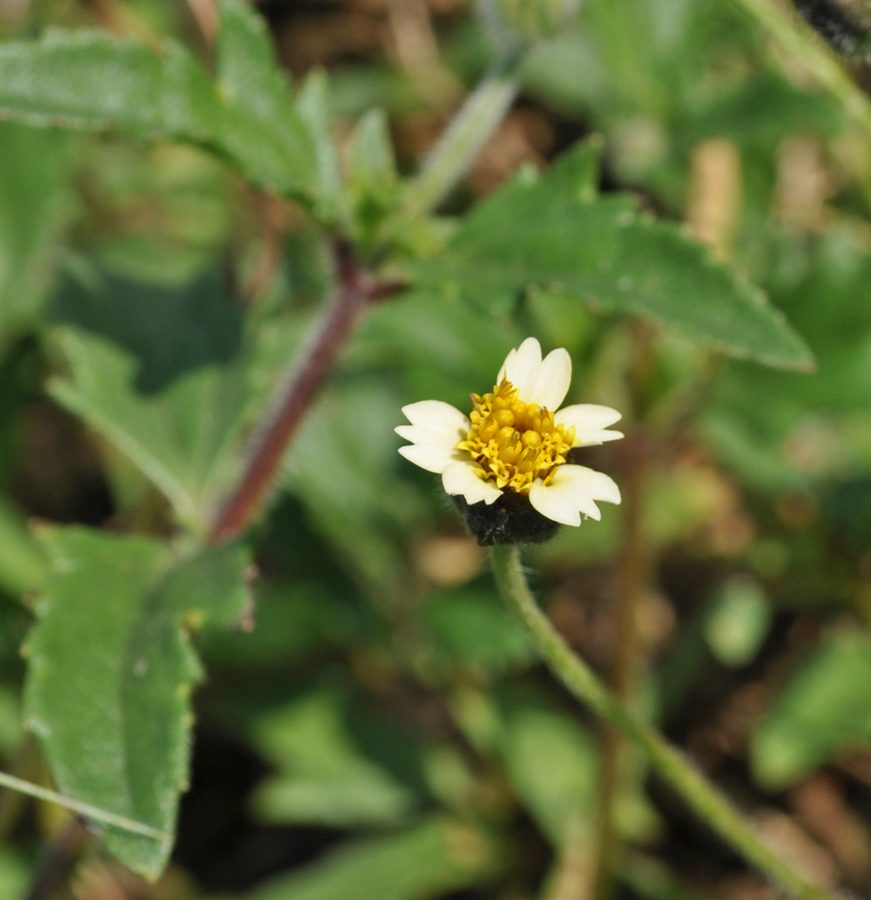

बिधाराTridax Daisy
Tridax procumbens · Asteraceae · FLR-0075

- Scientific name
- Tridax procumbens L.
- Family
- Asteraceae
- Hindi
- बिधारा
- Status here
- invasive
- IUCN
- not evaluated
When to look कब देखें
Present all year.
बिधारा / Tridax Daisy
Tridax procumbens L. — Asteraceae
बिधारा (घमरा / कोटबटन्स / जंगली डेज़ी) — पूर्वी उत्तर प्रदेश में सड़कों के किनारों, रेलवे पटरियों, बंजर परती ज़मीन और खेतों की सीमाओं पर उगने वाला एक बहुत ही आम, फैलने वाला (creeping/prostrate) और आक्रामक (invasive) खरपतवार है। यह मूल रूप से मध्य अमेरिका का निवासी है, जो भारत में आयातित अनाज के साथ आया था और अब पूरे देश में फैल चुका है। इसकी सबसे बड़ी पहचान इसके जमीन पर रेंगने वाले रोएँदार तने और हवा में सीधे ऊपर उठे लंबे डंठलों पर खिलने वाले छोटे डेज़ी जैसे फूल हैं। इसके फूलों के किनारों पर 5 से 6 सफ़ेद पंखुड़ियाँ होती हैं, जिनमें प्रत्येक के सिरे पर तीन दांत बने होते हैं (3-toothed white ray florets), और बीच में पीले रंग का बटन जैसा हिस्सा (yellow disc florets) होता है। यह खरपतवार मिट्टी में अन्य पौधों के बीजों को उगने से रोकने वाले रसायन छोड़ता है (allelopathic)। चोट लगने पर इसके पत्तों का रस या पेस्ट (leaf paste) पारंपरिक रूप से खून बहना बंद करने और घाव सुखाने के लिए उपयोग किया जाता है।
Quick Identification त्वरित पहचान
| Feature | Description |
|---|---|
| Plant habit | Prostrate, creeping annual or short-lived perennial herb with stems rooting at nodes, up to 15–40 cm high |
| Foliage | Oppositely arranged, lanceolate-ovate leaves, deeply toothed (lobed), and covered with stiff, rough hairs |
| Flowers | Small heads (10–15 mm) borne on extremely long, erect, leafless, hairy stalks rising 10–30 cm above ground |
| Ray florets | 5 to 6 cream-white or pale yellow outer petals, each ending in three small, distinct teeth |
| Seeds | Tiny brown achenes, covered in a crown of fine, feathery bristles (pappus) that acts as a parachute |
Field tip: Look along rocky roadsides or cracks in concrete paths. Watch for low-growing, hairy green weeds that shoot up thin, stiff wire-like stalks. At the tip of each stalk is a single small cream-white daisy flower with a bright yellow center. The leaves are very rough and hairy.
Morphology आकारिकी
Biometrics (typical measurements of mature plants in the northern Indian plains):
| Measurement | Range |
|---|---|
| Plant height | 15–40 cm |
| Flower stalk length | 10–30 cm |
| Leaf length | 3.0–6.0 cm |
| Flower head diameter | 1.0–1.5 cm |
| Seed size | 2.0–2.5 mm |
| Weight of 1000 seeds | 0.2–0.3 g |
Stem and Branches: Stems are creeping, cylinder-shaped, branched, and covered in stiff, white, spreading hairs. The nodes root easily in wet, loose soil.
Foliage: Simple, opposite leaves, with a pointed apex and wedge-shaped base, heavily notched or lobed. Both surfaces are rough to the touch.
Flowers: Composite heads (capitula). The outer ray flowers are female, cream-white, 3-toothed. The inner disc flowers are tubular, bisexual, bright yellow, with 5 petals.
Seeds: Blackish achenes, covered in stiff hairs. The crown of feathery scales (pappus) allows the seed to spin and travel long distances in the wind.
Associated Species / Interactions संबंधित प्रजातियाँ
- Invasive Colonizer: Rapidly colonizes disturbed soil, especially after pre-monsoon tilling. Its roots release chemical compounds into the soil (allelopathy) that suppress the germination of surrounding native seedlings, establishing monoculture mats.
- Pollinators: Visited by small butterflies (like the Lesser Grass Blue Lesser Grass Blue), honeybees, and hoverflies that seek nectar from the disc florets.
Pests and Diseases कीट और रोग
- Thrips: Small sap-sucking insects feed on flower heads, turning them brown and dry.
- Damping-off: Caused by the fungus Pythium in waterlogged soil, causing rot at the stem base of seedlings.
- Leaf Spot Fungus: Cercospora tridacis causes dark circular lesions on the foliage during monsoons.
Traditional and Ethnobotanical Use पारंपरिक और नृवंशवनस्पति उपयोग
- Traditional Wound-Healing Paste: When farmers get minor cuts from sickles in fields, they harvest fresh Bidara leaves, crush them between palms to extract the green juice, and apply it directly to stop bleeding and prevent infection.
- Hair Growth Decoction: The leaf juice is boiled with sesame or coconut oil, and the herbal oil is applied to the scalp in traditional folk medicine to reduce dandruff and promote hair growth.
- Veterinary Antiseptic Wash: A warm decoction of the boiled leaves is used in villages to clean scabies lesions and ticks from domestic cattle and goats.
- Soil Binding Cover: Due to its creeping stems that root at the nodes, it grows on loose slopes and roadside banks, helping to prevent topsoil erosion during heavy monsoon rains.
Expected Locally स्थानीय रूप से अपेक्षित
Not a field record. Written from published accounts for eastern Uttar Pradesh. No confirmed local sighting yet — if you have seen it, that is what the atlas needs.
अभी तक स्थानीय पुष्टि नहीं। यह विवरण प्रकाशित स्रोतों से है, किसी अवलोकन से नहीं।
An abundant invasive weed found across all blocks of the Basti district. They are regularly observed in the Harraiya, Vikramjot, and Basti blocks. Villagers state that bidhara grows in almost any empty space — even in dry bricks and concrete walls where other plants fail to survive. During September, the white feathery seed heads are seen drifting everywhere in the air near roadsides.
Distribution वितरण
Global range: Native to tropical Central America and South America; now widely naturalized and highly invasive in tropical Asia, Africa, and Australia.
In India: Widespread in all states and plains, particularly common in disturbed habitats and waste lands.
In Uttar Pradesh: Abundant state-wide in all residential and agricultural districts.
In Basti district / eastern UP: Widespread across all blocks.
Research Questions शोध प्रश्न
Anyone can investigate these | कोई भी इन प्रश्नों की जाँच कर सकता है
- How many days does a Tridax Daisy flower take to turn into a dry, feathery seed head after the petals drop? — Monitor and record flower life cycles.
- Does the addition of Tridax leaf paste to a fresh cut stop bleeding faster than washing with plain water? — Record clotting times in traditional usage.
- What is the maximum distance a feathery Tridax seed can travel in a 5 km/h breeze? — Conduct seed drop and wind tunnel tests.
- How many small butterfly species visit a single patch of Tridax flowers in a 30-minute window at 10 AM? — Conduct pollinator counts.
- Does the growth of Tridax Daisy reduce the height and count of surrounding grass seedlings in a garden plot? / क्या बिधारा की उपस्थिति किसी बगीचे के भूखंड में आस-पास की घास के अंकुरों की ऊंचाई और संख्या को कम कर देती है? — Test allelopathic effects in controlled pots.
Similar Species मिलती-जुलती प्रजातियाँ
| Species | How to tell apart | comparison |
|---|---|---|
| Billygoat Weed (Ageratum conyzoides) | Erect annual; leaves are softer; flowers are pale blue or white, fuzzy, lacks distinct ray petals | गंधेली — सीधे खड़े पौधे, रोएँदार नीले-सफेद फूल |
| Wild Daisy / Eclipta (Eclipta prostrata) | Leaves are smooth; flowers are pure white, much smaller, ray petals are extremely fine, lacks yellow button | भृंगराज — छोटे सफेद फूल, पीले बटन का अभाव |
| Tridax Weed / Parthenium (Parthenium hysterophorus) | Erect branched weed; leaves are carrot-like; flowers are small, round, white; highly toxic allergen | गाजर घास — सीधे खड़े पौधे, गाजर जैसी पत्तियां |
Field rule: Creeping hairy weed with oppositely arranged leaves, shooting up thin, wire-like stalks bearing a single cream-white flower head with a bright yellow center and 3-toothed petals, is the Tridax Daisy.
Taxonomy & Classification वर्गीकरण
Original description. Carl Linnaeus described the Tridax Daisy as Tridax procumbens in 1753 in his Species Plantarum (Vol. 2, p. 900). The type locality was listed as Veracruz, Mexico. The genus name Tridax is derived from the Greek word tridaktos, meaning three-toothed, referencing the petals. The specific name procumbens is Latin for prostrate or creeping.
Subspecies. Monotypic — no subspecies are currently recognised.
Family and order placement. Placed in the order Asterales, family Asteraceae (sunflower family), subfamily Asteroideae, tribe Heliantheae.
Phylogenetic notes. Tridax procumbens belongs to a neotropical clade within Asteraceae that has developed high ecological tolerance, rapid wind dispersal, and allelopathic secondary compounds (flavonoids and alkaloids) allowing successful global invasion.
IUCN status rationale. Not evaluated (NE) by the IUCN Red List. It has a highly secure, expanding global population as a colonizing weed.
Photo Gallery फोटो गैलरी
References संदर्भ
- Linnaeus, C. (1753). Species Plantarum. Laurentii Salvii, Holmiae, Vol. 2, p. 900. [original description]
- Kirtikar, K. R. & Basu, B. D. (1935). Indian Medicinal Plants. Vol. II. Lalit Mohan Basu, Allahabad.
- Saxena, V. K. & Albert, S. (2005). Beta-sitosterol-D-glucoside from Tridax procumbens. Phytochemistry.
- Holm, L. G., Plucknett, D. L., Pancho, J. V. & Herberger, J. P. (1977). The World's Worst Weeds: Distribution and Biology. University Press of Hawaii.
- World Flora Online (2024). Tridax procumbens taxon details.
- GBIF Occurrence Data — Tridax procumbens, India (2010–2025).
Source file: species/flora/weeds/tridax_daisy.md